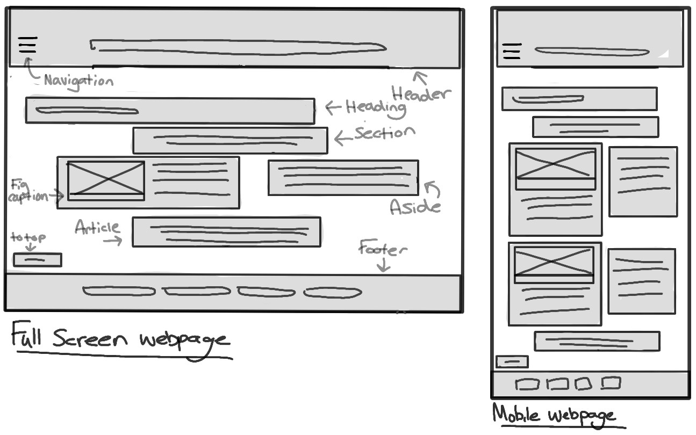

References:
Álvaro (no date) Simple Centred Hamburger Menu [https://codepen.io/alvarotrigo/pen/wvrzPWL] (Accessed: 12 November 2024)
The design of the website was influenced by a serious and a simple structure in aim for pages being easily able to navigate. This is also presented by the use of colder tones such as blue to convey a serious tone.
The width of the section element is 50% so more of the screen can be taken up by text instead of empty space. This is to ensure an easy view of the webpage. For the mobile version, the text goes below the image to ensure it does not collide, making it harder to read. The use of the article element is so there is a separate space to be able to credit the images.
The 'Food and Vendors' page has the same design to the home page, except with more sections.
There is a section box centered at the top to give the user an introduction to the page. The section box with the image would provide basic information such as location, small description of the place. The aside element would include more detailed facts. The layout goes from left to right, how the human eye would read something, navigating the users eyes clearly in stages.
The images, when hovered or pressed, presents the answer next to the image. The format on a monitor and mobile makes sure all the images can be seen without having to scroll. The use of heading 2 telling the user the question is to ensure it is clear to understand.
The section below the introduction gives the user the department email. The form is centered in its own box so it is clear to distinguish from the department email. The entry boxes are in line to ensure a stuctured webpage.
The header, navigation, heading, article, to top button and footer elements are all in the same location on the webpage to keep the website consistent.
All the pages in the footer have the same design as the home page, without an article element.
The website uses a Simple Centred Hamburger Menu (Álvaro). It is effective due to it being able to save space, ensuring there will be more space available for mobile users. I have made it so it only covers half of the screen so there is still space to view the content behind and as there is little in the navigation bar, it may be an inefficient use of space to take up the whole screen. The hamburger menu is universally recognised as a navigation icon, making identification of the menu simple. The menu also provides user interaction with the webpage and the animation gives a smooth and visually appealing experience for the user.
Álvaro (no date) Simple Centred Hamburger Menu [https://codepen.io/alvarotrigo/pen/wvrzPWL] (Accessed: 12 November 2024)